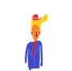

Ķer meksikāņus un attīri ameriku!
ķer meksikāņus, kas cenšās tikt pāri robežai!
vāc pēc iespējas vairāk punktus un glāb ameriku!
skaņas attēlo punktu iegūšanu un brīdina par briesmām!

Skaņas efekta nozīme spēlē:
Punkti: 0